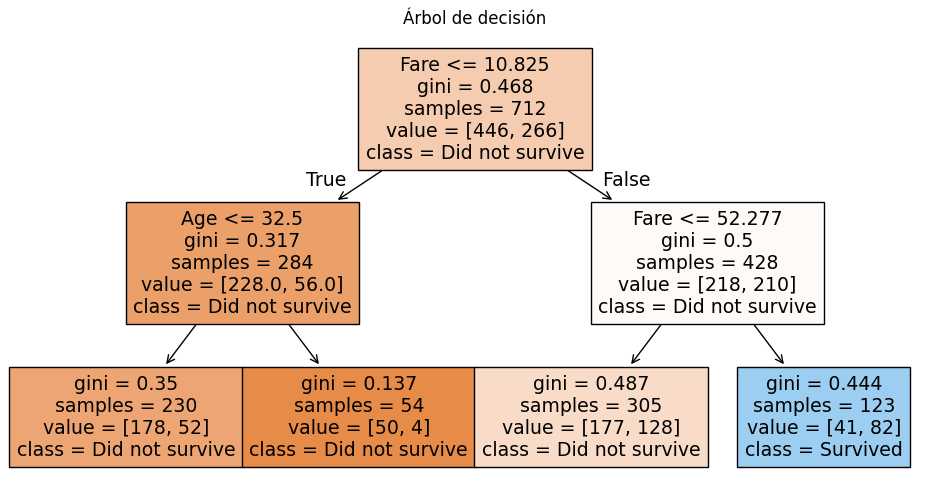
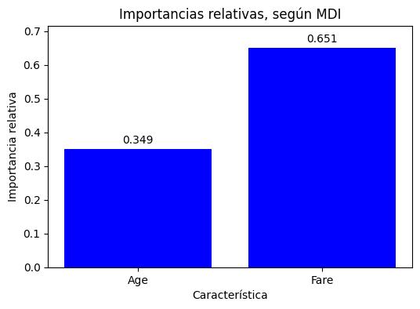
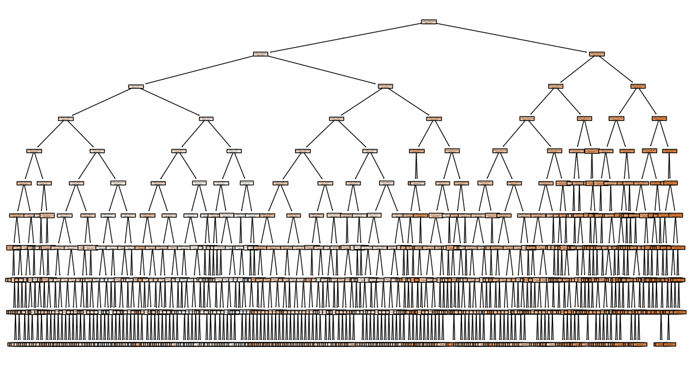

# Importar librerías
import pandas as pd
import matplotlib.pyplot as plt
from sklearn.tree import plot_tree
from sklearn.tree import DecisionTreeClassifier
from sklearn.tree import DecisionTreeRegressor
from sklearn.metrics import accuracy_score
from sklearn.metrics import mean_squared_error
from sklearn.ensemble import RandomForestClassifier
from sklearn.model_selection import train_test_split
from collections import CounterÁrboles de decisión y Random Forest
1. Librerías
2. Dataset
Leeremos un dataset sobre el Titanic:
# Importar dataset
dataset = pd.read_csv("https://raw.githubusercontent.com/datasciencedojo/datasets/master/titanic.csv")
dataset.head()| PassengerId | Survived | Pclass | Name | Sex | Age | SibSp | Parch | Ticket | Fare | Cabin | Embarked | |
|---|---|---|---|---|---|---|---|---|---|---|---|---|
| 0 | 1 | 0 | 3 | Braund, Mr. Owen Harris | male | 22.0 | 1 | 0 | A/5 21171 | 7.2500 | NaN | S |
| 1 | 2 | 1 | 1 | Cumings, Mrs. John Bradley (Florence Briggs Th... | female | 38.0 | 1 | 0 | PC 17599 | 71.2833 | C85 | C |
| 2 | 3 | 1 | 3 | Heikkinen, Miss. Laina | female | 26.0 | 0 | 0 | STON/O2. 3101282 | 7.9250 | NaN | S |
| 3 | 4 | 1 | 1 | Futrelle, Mrs. Jacques Heath (Lily May Peel) | female | 35.0 | 1 | 0 | 113803 | 53.1000 | C123 | S |
| 4 | 5 | 0 | 3 | Allen, Mr. William Henry | male | 35.0 | 0 | 0 | 373450 | 8.0500 | NaN | S |
Podemos ver que cada fila del dataset representa un pasajero del Titanic y contiene distintas variables (características) sobre cada persona, por ejemplo:
- Name: nombre del pasajero.
- Sex: sexo.
- Age: edad.
- Pclass: clase del ticket.
- Fare: precio pagado.
- SibSp: cantidad de hermanos/esposos a bordo.
- Parch: cantidad de padres/hijos a bordo.
La variable objetivo es:
- Survived:
- 1: sobrevivió.
- 0: no sobrevivió.
Por lo tanto, nuestro objetivo es construir un modelo capaz de predecir si un pasajero sobrevivió o no.
3. Características y variable objetivo
Separamos el problema en:
- Variables de entrada (features/características): variables que contienen información utilizada para realizar la predicción.
- Variable objetivo (target): variable que el modelo intenta predecir.
# Identificar características
features = ['Age', 'Fare']
# Separar el problema en características y variable objetivo
X = dataset[features]
y = dataset['Survived']4. Entrenamiento
Para entrenar el modelo, dividimos el conjunto de datos en datos de entrenamiento y de prueba. Para esto, usamos la función train_test_split.
- Train (entrenamiento): datos usados para aprender patrones.
- Test (prueba): datos nuevos usados para evaluar el modelo.
El parámetro test_size indica qué porcentaje de los datos se reserva para prueba. En este caso, 20% de los datos serán ocupados para pruebas y 80% para entrenamiento.
# Separar conjunto de datos en conjunto de entrenamiento y prueba
X_train, X_test, y_train, y_test = train_test_split(X, y, test_size=0.2)5. Árbol de decisión
Entrenaremos un modelo de árbol de decisión para predecir si un pasajero sobrevivió o no al Titanic.
Un árbol de decisión se compone de nodos que dividen los datos con condiciones, las cuales se llaman reglas. Un camino desde la raíz hasta una hoja define una regla compuesta por la combinación de esas condiciones.
Un árbol de decisión aprende automáticamente reglas lógicas a partir de los datos, por ejemplo:
IF Sex = female AND Pclass <= 2
THEN SurvivedEl parámetro max_depth controla la profundidad máxima del árbol: - Un árbol más profundo puede aprender reglas más complejas. - Un árbol muy profundo puede memorizar los datos de entrenamiento (overfitting). - Un árbol pequeño suele generalizar mejor, pero puede ser demasiado simple (underfitting).
# Crear modelo
arbolDecision = DecisionTreeClassifier(max_depth=2)
# Entrenar modelo con conjuntos de entrenamiento
arbolDecision.fit(X_train, y_train)DecisionTreeClassifier(max_depth=2)In a Jupyter environment, please rerun this cell to show the HTML representation or trust the notebook.
On GitHub, the HTML representation is unable to render, please try loading this page with nbviewer.org.
Parameters
5.1. Predicciones
Para medir el desempeño del modelo, usamos el árbol de decisión entrenado para realizar predicciones y luego calculamos su precisión (accuracy) sobre los conjuntos de entrenamiento y prueba.
# Usar el modelo para predecir con los conjuntos de entrenamiento y prueba
y_train_pred = arbolDecision.predict(X_train)
y_test_pred = arbolDecision.predict(X_test)
# Calcular la precisión del modelo
train_acc = accuracy_score(y_train, y_train_pred)
test_acc = accuracy_score(y_test, y_test_pred)
print('Train Accuracy:', train_acc)
print('Test Accuracy:', test_acc)Train Accuracy: 0.6839887640449438
Test Accuracy: 0.67597765363128495.2. Visualización
Podemos visualizar gráficamente el árbol de decisión.
Cada nodo representa: - una condición, - una división de los datos, - o una predicción final.
# Visualizar modelo
plt.figure(figsize=(12,6))
plot_tree(
arbolDecision,
filled=True,
feature_names=features,
class_names=['Did not survive', 'Survived']
)
plt.title('Árbol de decisión')
plt.show()
5.3. Overfitting
Como ejemplo, entrenaremos un árbol muy profundo. Los árboles demasiado complejos pueden memorizar los datos de entrenamiento.
# Crear modelo
arbolDecisionProfundo = DecisionTreeClassifier(max_depth=None)
# Entrenar modelo
arbolDecisionProfundo.fit(X_train, y_train)
# Usar el modelo para predecir con los conjuntos de entrenamiento y prueba
y_train_pred = arbolDecisionProfundo.predict(X_train)
y_test_pred = arbolDecisionProfundo.predict(X_test)
# Calcular la precisión del modelo
train_acc = accuracy_score(y_train, y_train_pred)
test_acc = accuracy_score(y_test, y_test_pred)
print('Train Accuracy:', train_acc)
print('Test Accuracy:', test_acc)Train Accuracy: 0.9536516853932584
Test Accuracy: 0.6759776536312849Podemos observar que:
- La precisión con el conjunto de entrenamiento aumenta mucho.
- La precisión con el conjunto de prueba puede disminuir.
Esto corresponde a overfitting.
6. Random Forest
Random forest, o bosque aleatorio, es un algoritmo de aprendizaje automático que combina el resultado de múltiples árboles de decisión para llegar a un resultado único utilizando Bagging. Su facilidad de uso y flexibilidad han impulsado su adopción, ya que maneja problemas de clasificación y regresión.
El parámetro n estimators indica la cantidad de árboles que tendrá el bosque: - Tener más árboles implica menor varianza, predicciones más estables y mejor generalización, - Pero demasiados árboles aumentan el tiempo de entrenamiento e incrementan el costo computacional.
# Crear modelo
randomForest = RandomForestClassifier(
n_estimators=100,
max_depth=4
)
# Entrenar modelo
randomForest.fit(X_train, y_train)RandomForestClassifier(max_depth=4)In a Jupyter environment, please rerun this cell to show the HTML representation or trust the notebook.
On GitHub, the HTML representation is unable to render, please try loading this page with nbviewer.org.
Parameters
6.1 Predicciones
# Usar el modelo para predecir con los conjuntos de entrenamiento y prueba
y_train_pred = randomForest.predict(X_train)
y_test_pred = randomForest.predict(X_test)
# Calcular la precisión del modelo
train_acc = accuracy_score(y_train, y_train_pred)
test_acc = accuracy_score(y_test, y_test_pred)
print('Train Accuracy:', train_acc)
print('Test Accuracy:', test_acc)Train Accuracy: 0.7219101123595506
Test Accuracy: 0.6871508379888268La precisión (accuracy), obtenida a través de la función accuracy_score, compara las etiquetas reales con las predicciones. Una precisión cercana a 1 indica que el modelo tiene buen desempeño.
6.2 Importancia relativa
Con Random Forest podemos estimar qué características son más importantes para la predicción.
MDI (Mean Decrease in Impurity) es una medida utilizada para evaluar la importancia de cada característica en un Random Forest, basada en cuánto reduce la impureza de los nodos al realizar divisiones.
MDI suele calcularse usando la disminución de Gini impurity.
El atributo feature_importances entrega la importancia relativa de cada característica usando MDI.
# Estimar importancia relativa
importance = randomForest.feature_importances_
plt.figure(figsize=(6,4))
bars = plt.bar(features, importance, color='blue')
plt.title('Importancias relativas, según MDI')
plt.xlabel('Característica')
plt.ylabel('Importancia relativa')
plt.ylim(0, max(importance)*1.1)
for bar in bars:
height = bar.get_height()
plt.text(bar.get_x() + bar.get_width()/2, height + 0.01, f'{height:.3f}', ha='center', va='bottom')
plt.show()
Las importancias relativas son valores entre 0 y 1, cuya suma total es 1, que indican cuánto contribuyó cada variable a mejorar las decisiones del modelo.
6.3. Reglas más frecuentes
Extraer las reglas ayuda a entender qué combinaciones de características se usan con más frecuencia para clasificar.
reglas = [] #Lista que contiene todas las reglas del bosque
# Iterar árboles del bosque
for arbol in randomForest.estimators_:
arbol_ = arbol.tree_ #Estructura interna del árbol, que contiene información sobre nodos, características y umbrales
caracteristica = [features[i] if i >= 0 else "undefined" for i in arbol_.feature] #Traducir índices a nombres
caminos = []
camino = []
#Recorrer arbol nodo por nodo, recursivamente
def recursivo(nodo, camino):
#Si el nodo no es una hoja
if arbol_.feature[nodo] >= 0:
nombre = caracteristica[nodo]
umbral = arbol_.threshold[nodo]
#Camino izquierdo
#característica <= umbral
camino_izquierdo = camino.copy()
camino_izquierdo.append(nombre + "<=" + str(umbral))
recursivo(arbol_.children_left[nodo], camino_izquierdo)
#Camino derecho
#característica > umbral
camino_derecho = camino.copy()
camino_derecho.append(nombre + ">" + str(umbral))
recursivo(arbol_.children_right[nodo], camino_derecho)
#Si el nodo es una hoja
else:
caminos.append(camino)
recursivo(0, camino) #Llamada inicial para explorar el árbol nodo por nodo, recursivamente
reglas.extend(caminos) #Agregar reglas del árbol a la lista global de reglas
reglas_contador = Counter(tuple(regla) for regla in reglas) #Calcular frecuencia de las reglas
print("Las 3 reglas más frecuentes:")
print()
for i, (regla, contador) in enumerate(reglas_contador.most_common(3), start=1):
print("Regla " + str(i) + " - Frecuencia: " + str(contador))
for condicion in regla:
print(str(condicion))
print()Las 3 reglas más frecuentes:
Regla 1 - Frecuencia: 4
Age<=5.5
Age<=1.5
Regla 2 - Frecuencia: 3
Age<=5.5
Fare<=10.797899723052979
Regla 3 - Frecuencia: 2
Age<=8.5
Age<=1.5
Fare<=39.34375
7. Árboles de regresión
Ahora utilizaremos árboles para predecir valores continuos.
Ejemplo: - precios, - salarios, - temperaturas.
7.1 Dataset
# Importar dataset
dataset = pd.read_csv("https://raw.githubusercontent.com/ageron/handson-ml/master/datasets/housing/housing.csv")
dataset.head()| longitude | latitude | housing_median_age | total_rooms | total_bedrooms | population | households | median_income | median_house_value | ocean_proximity | |
|---|---|---|---|---|---|---|---|---|---|---|
| 0 | -122.23 | 37.88 | 41.0 | 880.0 | 129.0 | 322.0 | 126.0 | 8.3252 | 452600.0 | NEAR BAY |
| 1 | -122.22 | 37.86 | 21.0 | 7099.0 | 1106.0 | 2401.0 | 1138.0 | 8.3014 | 358500.0 | NEAR BAY |
| 2 | -122.24 | 37.85 | 52.0 | 1467.0 | 190.0 | 496.0 | 177.0 | 7.2574 | 352100.0 | NEAR BAY |
| 3 | -122.25 | 37.85 | 52.0 | 1274.0 | 235.0 | 558.0 | 219.0 | 5.6431 | 341300.0 | NEAR BAY |
| 4 | -122.25 | 37.85 | 52.0 | 1627.0 | 280.0 | 565.0 | 259.0 | 3.8462 | 342200.0 | NEAR BAY |
7.2 Características y variable objetivo
# Identificar características
features = ['longitude', 'latitude', 'housing_median_age', 'total_rooms', 'total_bedrooms', 'population', 'households', 'median_income']
# Separar el problema en características y variable objetivo
X = dataset[features]
y = dataset['median_house_value']7.3 Entrenamiento
# Separar conjunto de datos en conjunto de entrenamiento y prueba
X_train, X_test, y_train, y_test = train_test_split(
X,
y,
test_size=0.2
)7.4 Modelo
# Crear modelo
arbolRegresion = DecisionTreeRegressor(
max_depth=10,
min_samples_leaf=10 #El parámetro min_samples_leaf controla el tamaño mínimo que puede tener una hoja.
)
# Entrenar modelo
arbolRegresion.fit(X_train, y_train)DecisionTreeRegressor(max_depth=10, min_samples_leaf=10)In a Jupyter environment, please rerun this cell to show the HTML representation or trust the notebook.
On GitHub, the HTML representation is unable to render, please try loading this page with nbviewer.org.
Parameters
7.5 Predicciones
# Usar el modelo para predecir con los conjuntos de entrenamiento y prueba
y_test_pred = arbolRegresion.predict(X_test)
# Calcular error cuadrático medio (MSE)
mse = mean_squared_error(y_test, y_test_pred)
print('MSE:', mse)MSE: 3595562541.7759967.6 Visualización
# Visualizar árbol de regresión
plt.figure(figsize=(15,8))
plot_tree(
arbolRegresion,
filled=True,
feature_names=X.columns
)
plt.show()